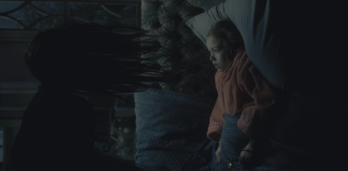
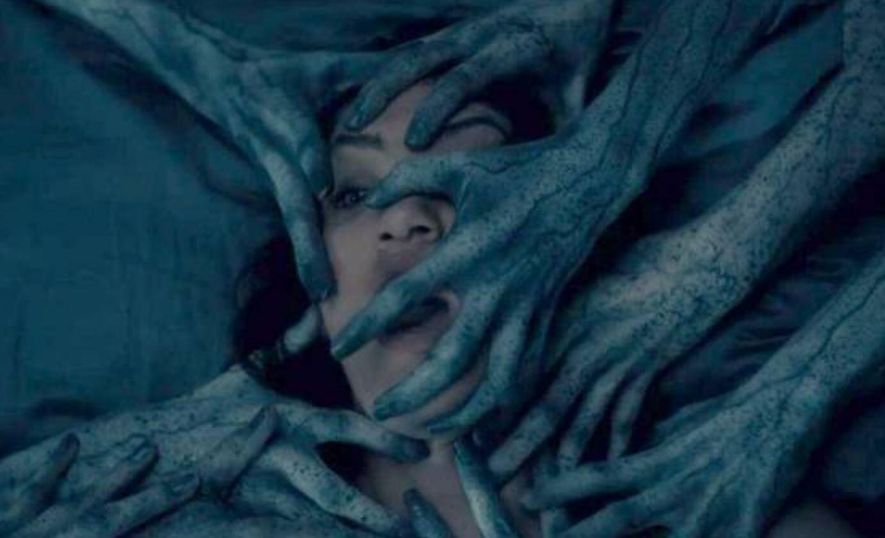

=>Michiel Huisman and Paxton Singleton as Steven Crain,[1][2] the eldest son of the family. He became a famous author after writing about his family's experiences at Hill House, despite his siblings' disapproval.
=>Carla Gugino as Olivia Crain,[3] the matriarch of the family, who designs houses. She, along with her youngest daughter Nell, is among the most affected by the paranormal activity in the house.
=>Timothy Hutton and Henry Thomas as Hugh Crain,[4][5] the patriarch of the family, who flips houses. He becomes estranged from his children after the events at Hill House.
=>Elizabeth Reaser and Lulu Wilson as Shirley Crain Harris,[4][6] the eldest daughter of the family. She owns a mortuary with her husband Kevin. They have a son and a daughter.
=>Oliver Jackson-Cohen and Julian Hilliard as Luke Crain,[2][7] older twin of Nell and one of the two youngest members of the family. He struggles with addiction as an adult to push out his memories of Hill House.
=>Kate Siegel and Mckenna Grace as Theodora "Theo" Crain,[4][8] the middle child of the five, and a child psychologist. "Sensitive" like her mother, she wears gloves to prevent touching other people and experiencing psychic knowledge about them.
=>Victoria Pedretti and Violet McGraw as Eleanor "Nell" Crain Vance,[6][8] Luke's younger twin and one of the two youngest members of the family. She has never fully recovered from the haunting she experienced while living in Hill House.
Anthropologist and parapsychologist Doctor John Montague, hoping to legitimize the field of parapsychology through groundbreaking new research, invites a carefully-selected group of psychically sensitive individuals from around the country to spend part of the summer at Hill House—a manor in the northeastern United States with a reputation for being deeply haunted. The only two people to accept his invitation are Eleanor Vance, a childhood victim of poltergeist activity who has spent most of her adult life caring for her ailing mother, who has very recently passed away; and Theodora, a bohemian psychic with clairvoyant capabilities who lives with a roommate in a large city. Luke Sanderson, the young man who stands to inherit Hill House from his relatives, also pledges his time for the summer—Montague’s lease states that a member of the family who owns Hill House must be present during the experiment to keep an eye on what the renters are doing to the house, as past tenants have had troubles up at the manor.
Eleanor Vance steals the car she co-owns with her sister Carrie and her brother-in-law and drives over a hundred miles to Hill House, excited to finally have an adventure of her own. As she arrives at the house and meets the caretakers, Mr. and Mrs. Dudley, she realizes she is the first one there—and she senses a deeply malevolent energy coming from the house. Nevertheless, Eleanor is hungry for an adventure, and she decides to stay rather than turn tail and head for home. She soon meets Theodora and the two young women bond quickly—Eleanor is dazzled by Theodora’s beauty and wit. Doctor Montague and Luke Sanderson soon arrive, and Doctor Montague explains that Hill House has been the site of a haunting for as long as eighty years. The man who built it, Hugh Crain, purposefully designed the house to be labyrinthine and disorienting, and after his wife’s death in the house’s driveway, a series of strange occurrences took hold of the place.
As the four begin their stay at Hill House, they explore and chart the manor’s twisting depths. A series of strange disturbances occur, mostly at night—but the pounding, rattling, strange laughter, and cold spots throughout the house and on the grounds actually excite the group. The jovial foursome joke about the presence that is all around them, and they have long discussions over meals and after-dinner drinks about the nature of fear, the feeling of terror, and the possibility that the house is trying to pit them against one another. However, after writing in chalk appears on the wall of the great hall one afternoon—writing which is directed at Eleanor—the terror the group feels increases, as does their suspicion of one another. The others suspect Eleanor of writing the scary words herself, while Eleanor reels at the possibility that the house is singling her out. After more frightening occurrences—a terrifying presence which Theodora spots in the woods, and more writing on the wall (this time in blood)—Doctor Montague summons his wife, Mrs. Montague, who is also a parapsychologist, to come join the team.
Mrs. Montague arrives with her friend and traveling companion, Arthur Parker, and expresses her disappointment with how things are going so far—she seeks to draw the lonely, tortured spirit within Hill House out by communicating with it using a planchette, an automatic writing device. Mrs. Montague is contemptuous of her husband’s methods and resistant to hearing about the very real terrors the group has already witnessed, and she insists on contacting the presence on her own. As Eleanor begins to suspect Theodora and Luke of talking badly about her behind her back and even scheming against her, she begins to lose her grip on reality, and feels that the house is urging her to “surrender” to it. She begins seeing and hearing things that the others seem immune to—and most chillingly of all, Mrs. Montague reports back that her planchette has written copiously about Eleanor.
During a night of physical and auditory phenomena, Doctor Montague, Theodora, Luke, and Eleanor all huddle together in the doctor’s room for strength, but at the height of the disturbance, Eleanor willingly gives herself over to the house. She wakes up in the morning with a renewed sense of joy and a strange ability to hear what is happening all over the house. Eleanor confronts Theodora about the tension between them and asks if she can come live with Theodora once the experiment is over. Theodora coldly refuses Eleanor, saying she doesn’t take in strays. That night, Eleanor gets out of bed in the middle of the night and gleefully causes a ruckus, raising the others from their beds by pounding on their doors. She then runs away into the library, from whence she feels the voice of her deceased mother beckoning her. She climbs a rotting staircase in the corner of the library to get to a trap door that will allow her access to the house’s highest turret. The group comes into the library and coaxes Eleanor down from the precarious staircase, reproaching her for her childish and worrisome behavior.
In the morning, Doctor Montague and the others tell Eleanor that she needs to leave Hill House for her own good. Eleanor is unable to express to the others just how much she feels a part of the house—and how impossible it seems that she could ever leave. The others help Eleanor pack and retrieve her car from the garage. As she bids tearful goodbyes to her companions, she begs Doctor Montague to let her stay. He forces her into the car, however, and tells her she’ll feel better once she’s away from the mansion. Eleanor begins leaving the driveway, but is, at the last minute, compelled to crash her car into a large oak tree and commit suicide. In the seconds before impact, Eleanor has a moment of clarity, and wonders why she’s doing what she’s doing.
In a brief epilogue, it is revealed that Doctor Montague published his article about Hill House to great contempt from his colleagues, and was all but forced to retire from academia. The presence which has always haunted Hill House remains there, walking its halls alone.